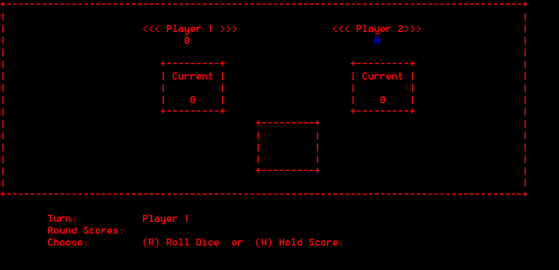
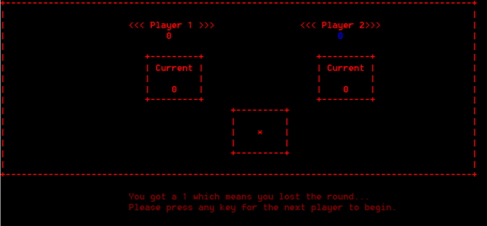
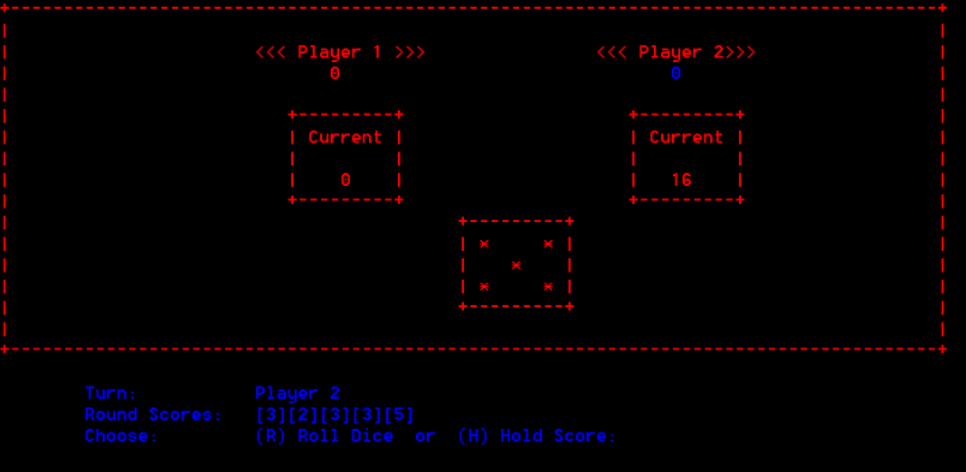
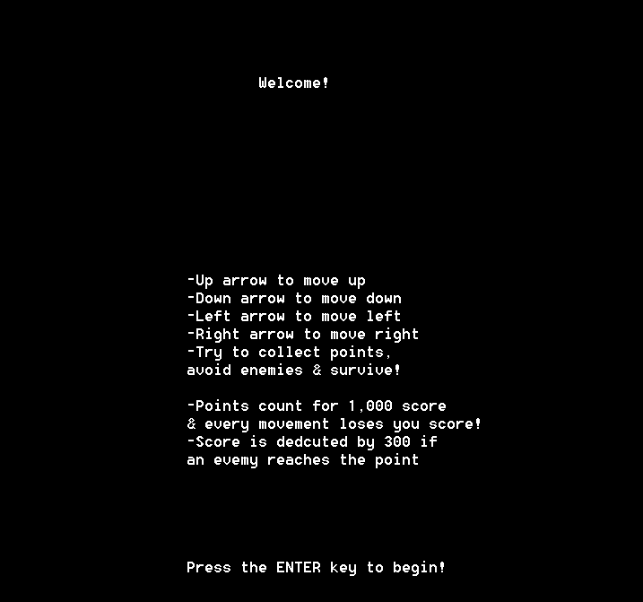
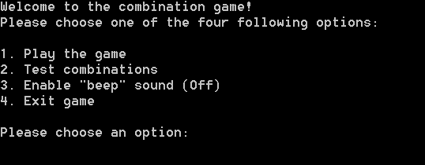
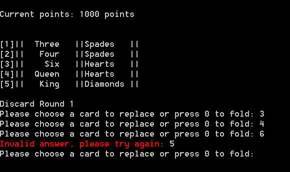
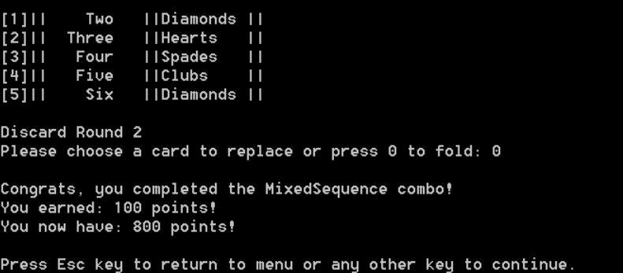
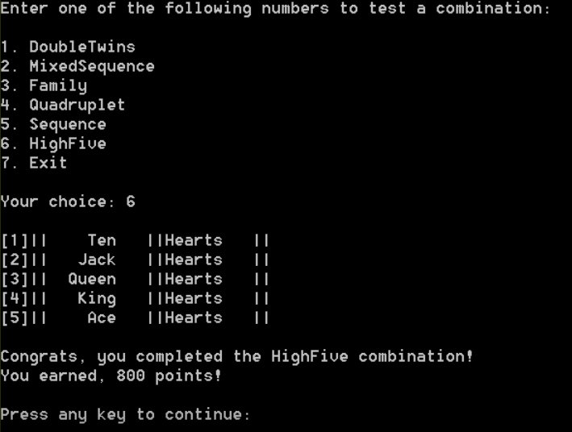

Background
Second year student in Computer Sciences at John Abbott College. However, this is the third year at the college though. Previously, during the first back in 2017, the initial field of studies was Sciences. However, after a semester, a program change to Computer Sciences was decided.
Previously attended schools include: Forest Hill and Westwood, for both elementary and high school respectively.
After copmleting high school, not only was a stadard diploma achieved, but so was an Honour Roll. Other academic achievements include completing grade 10 and 11 scientific Math and secondary five Chemistry and Physics.
Interests
Just like most computer science students in this day and age, playing video games is a hobby. While weekly playtime has significantly decreased since joining Copmuters Sciences, Super Smash Bros is a game that remains popular. Favourite games include: Xenoblade Chronicles, Xenoblade Chronicles 2 and Billy Hatchers & the Giant Egg.
Outside of the house, sports and other physical activities have been promnent throghout life. Now-a-days, curling is the main sport practiced. As early as 2014, curling has been a big part of life every throughout the winter season. During 2016-2017, in grade 11, the school's curling team won the champioships against all other schools' curling teams. On the other hand, another sport practiced, while only at school, is squash.
One of the biggest of all are cats. Whether it's an online gifs, image or fact video, any nice cat content is always welcomed.
Projects
Intro to Computer Sciences Final Project
Description:
This is the final project to the Intro to Computer Science course back in 2017. Assigned by Mr. Aref, this is a basic dice game where the objective is to roll the dice and get as many points as possible. Points are earned by the number rolled, but, if you roll a 1, your round ends, you earn no points, and the opponent's turn starts. Challenges:
The logic behind this project is rather simple: you have some variables, arrays and loops. However, the biggest challenge, by far, was the design off the game. Drawing the border, score display, and especially the pattern on the dice were a chore. Getting everything to perfectly align, centered and not break depending on the size of what's in he boxes was the start of my career of shedding tears cause of programming. What I enjoyed most:
without a doubt, I did enjoy making this final project. In fact, it remains as one of prides and joy. It is the first big, if not,actual programs that I made. It stands as an inspiration for me, especially prior to Computer Sciences and before a time where I knew where my path in life would take me. Aside from that, it taught me the true power of loops and how the game is managed while running inside of them. Colouring too! Granted, something went wrong when taking the scnreeshots, but finally giving a program a more aesthetically look was very, very pleasing! Lastly, the realization that I was able to make a game, any sort of game, with the knowledge and capability that I had was truly inspiring!Semester 1 Final Project
Description:
This is the final project for the first semester of Computer Sciences after finally making it into the program. Assigned by Larry Fagen, this project had one objective that students were free to explore on their own: make a game with movement. Will many students made radical projects, mine was simple. Run around, collect the points icon and avoid enemies. You lose points as you move and gain a bunch once reaching an icon for poionts. Enemies chase you, or if they get a point, you lose even more! Enemies also eat walls, inspired by Space Invaders™ which can give you more options to move around the field.| Up arrow key | Move up. |
|---|---|
| Down arrow key | Move down. |
| Left arrow key | Move left. |
| Right arrow key | Move right. |
Thought process of the project:
While I did have challenges, they weren't struggles, they were moments that I was exploring. So it would be unfair to label them as "challenges" and give the notion that I was "having a bad time"™. To start off, getting the movement was really interesting. This was part I was most lost. While students at that point did have the fundamentals to do everything else, the movement aspect was covered briefly in one or two classes. Which in retrospect, is good! More importantly than using keys to move a character on screen was the part where you had to remove its trail. See, the movement isn't traditional movement, it was printing charcters on the screen based on the screen coordinates that were kept track and changed based on the keys pressed. So, after every moevement, you had to grab the previous coordinates saved and create a blank space there in order to free up that spot. Interesting, eh? Next, collision. It was this part where everything was coming together. As Larry used to say: "wax on, wax off". For collision, you essentially check the coordinates and where the character is going to move, and based on that and if there's a wall; keep the character in place or move them before before they're moved/printed. Finally, as previously mentioned, my project contained enemies, with very simple AIs. At first, Larry told me making them was simnple: that made me wanna cry. But really, it was that simple! Spoilers up ahead! One of them chases your charcter. How is that done? Simple, after every few hundred iterations of the game's while loop, move the enemy closer to the player. Yes, seeing how the program runs through the loop a million times a minute, I made it so that after several hundred times, the enemy can finally move. Thus giving the illusion that the enemy actually moves one space a second. Insanity, is it not? Another, using the same premise for moving, chases after the point icon. However, this one requires more runs through the loop in order to move, since causing the enemy to get the point too many time will be unfair. Lastly, the third one, the fastest, runs around randomly. The enemmies with different movement patterns were inspired from the ghosts in Pac Man™. The last one directly reflecting the orange ghost, Clyde, who also moves randomly. Never get caught by him next time. Overall, this project still baffles me. I was still impressed that I was able to make this when I was taking the screenshots! The sheer scope and insane mess that the code is made me work for several days and many hours after class. At least there are a lot of comments. But this definitely wasn't possibly without the help of Larry. He gave only some hints on how to complete the project, but it was thanks to his attitude and insight into the art that I feel like I could have and can still tackle something this ambitious.Semester 2 Final Project
Description:
This project was once again assigned by Mr. Aref and was the final project of the second semester. While less ambitous in scope, this one also proved very challenging. Whlie this is just a card game, the project is also composed of a couple of classes and many functions that are a part of the proper class. The objective of the game is to obtain a certain pair of cards. By fulfilling these combinations, you can continue playing and earn points. Fail to play lucky and you lose points, eventually accumulating in a game over. There is also anogher setting to check out and test all possible combinations. And to verify that the game also isn't cheating you. Lastly, as a bonus, I included beep noises in the game. It's fun! Challenges:
While a lot of time was spent planning how it was gonna work, there weren't too many struggles. This biggest, by far, was the detection of combinations. You have to check the suite, number, make sure they're in order, sort the card by number and then suite, throw the player's cards into combination detaction functions and then return an output. There was a lot that could go wrong in there it was definitely making the best process that made it challenging. The other challenging part was creating proper methods for the proper classes. A lot of people were mixing methods that should have been in a function of the game into a class. Methods of class should relate to an individual instance of that class and not an array of them nor an entire game. During this time, I learned that an individual card cannot shuffle a player's hand. What I enjoyed most:
While the previous final project had a lot of exploration, this on was much more linear, but that is fine! This project was much more formal and overall allowed me to write code that is some of my neatest and best to this date! Every function was formally labeled with a description, input and output. Comments were not placed to explain every detail but only what was necessary. They also weren't stories but explanations more straight to the point than before. The classes made for the project were had solid foundations of abstraction, encapsulation, inheritence and even polymorphism! The use of classes was very satisfying and was an enjoyable experience, as odd as that may sound. Once again, I was overjoyed by the fact I was able to create a game. The realization that my current potential and create something to grand and ambitious! Finally, the one thing that plagued me at the start was quickly relieved: the display of the cards. Turns out, you don't need to make a silly, easily breakable, bunch of drawings using ASCII on a terminal, unlike my first final project. I made that remark to Mr. Aref as a joke and reference to that semester. Where do I see myself in 3 to 5 year from now?
It's hard to say, to be honest. The present is ever evolving and we constantly evolve and change as people. While I entered Computer Sciences for programming, I am slowly beginning to enjoy web development the more I learn. Though, I also learn to dislike more about it. Aka property names that don't feel right. What I do believe is that the best choice is to keep doors open, open for opportunity and new possibilities. As someone as myself who believed all throughout highschool that they would study sciences tried to get out after entering College, I understand that fate is not what you believe is set in stone. That you must be awake for new opportunities. For it is those with the will the ones who have the power to change their future.